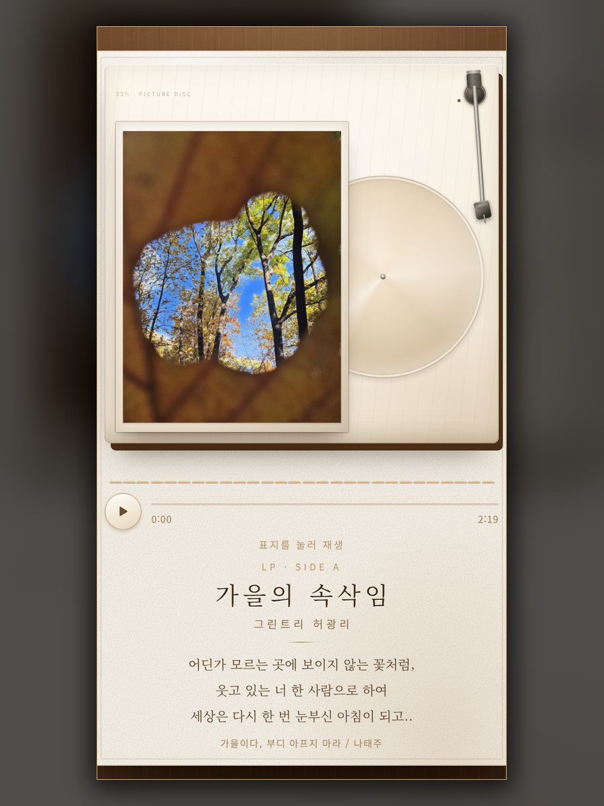
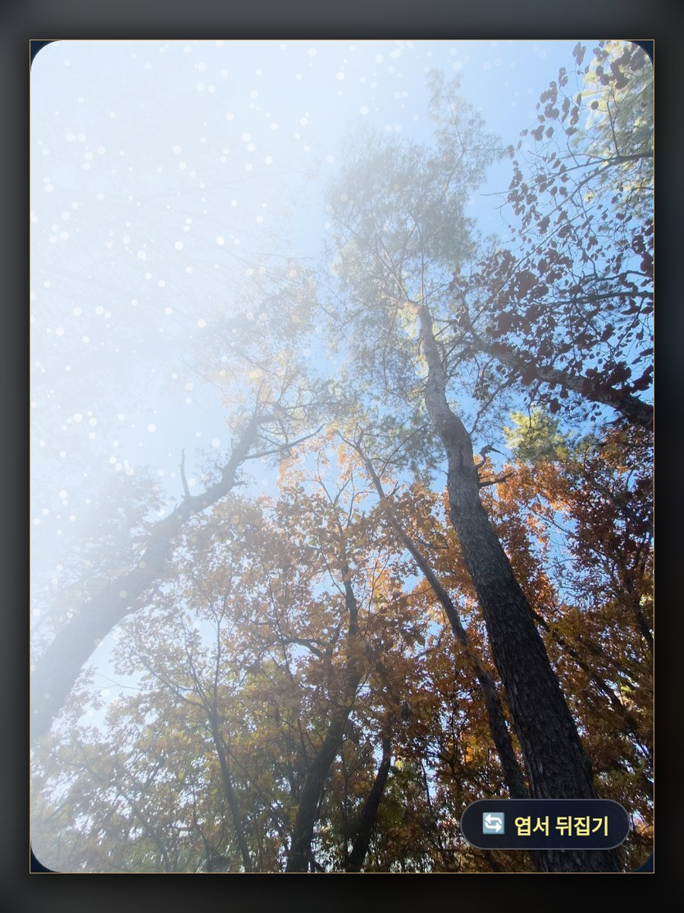
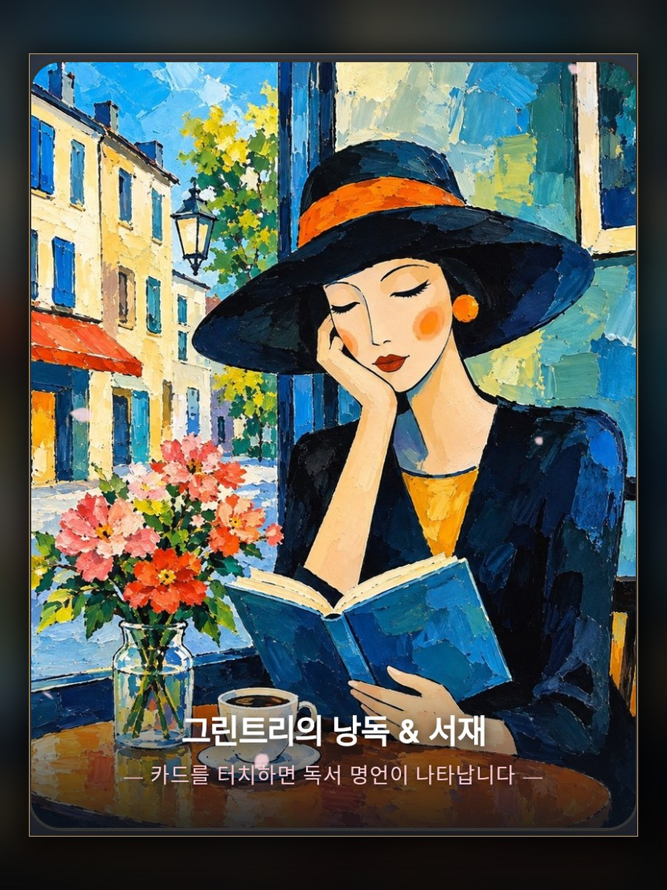

01
가을의 속삭임 · LP 엽서
A Whisper of Autumn
표지를 눌러 판을 돌리면, 하트 모양으로 뚫린 잎 사이로 가을 숲이 흘러나옵니다. 나태주 시인의 시 한 편을 음악과 함께 담았습니다.
작품 열기 →Hall Ⅱ · Interactive
Postcards & Cards You Can Touch
돌리고, 문지르고, 뒤집어 보는 엽서 세 점입니다. 그림 위를 손끝으로 건드리면 소리와 빛이 함께 움직입니다.
展 · 작품 3점

A Whisper of Autumn
표지를 눌러 판을 돌리면, 하트 모양으로 뚫린 잎 사이로 가을 숲이 흘러나옵니다. 나태주 시인의 시 한 편을 음악과 함께 담았습니다.
작품 열기 →
Frost on the Glass
서리가 하얗게 내린 유리창을 손끝으로 문질러 닦아 내면, 그 아래에서 시 한 편과 맑은 아침 숲이 나타납니다. 사운드가 함께 켜집니다.
작품 열기 →
Cherry Blossom Reading Card
카드를 터치하면 피아노 소리와 함께 카드가 천천히 뒤집히고, 책을 읽는 마음에 대한 데카르트의 문장이 꽃잎 위에 떠오릅니다.
작품 열기 →세 작품 모두 소리가 있습니다 · 휴대폰에서는 이어폰을 권합니다 · 엽서를 닫으면 이 화면으로 돌아옵니다